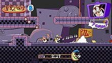

Pizza Tower

Pizza Tower is a 2023 platform game created by the indie developer Tour De Pizza. It follows a pizza chef, Peppino Spaghetti, who must scale a tower to prevent the destruction of his pizzeria. Across 20 side-scrolling levels, the player increases their score by gathering collectibles and defeating enemies to build combos. At the end of each level, they activate an escape sequence and must return to the beginning within a time limit. Pizza Tower does not feature health or lives, and its difficulty depends on what the player chooses to achieve.
The development began around 2018 and was led by the pseudonymous designer McPig and programmer Sertif. Pizza Tower began as a role-playing video game with survival horror elements before evolving into a platformer inspired by Nintendo's dormant Wario Land series, to which McPig wanted to provide a spiritual successor. It was developed with GameMaker and features a cartoonish, high-resolution pixel art style inspired by SpongeBob SquarePants and French comics. Wario Land 4 (2001) served as the basis for the gameplay and level design.
Pizza Tower developed a large fandom during its development through early access builds offered to Patreon backers and game demos. It was released for Windows on January 26, 2023. Pizza Tower received positive reviews and nominations for year-end accolades. Critics praised its gameplay, music, visuals, and humor. Critics favorably compared its art style to 1990s Nicktoons and the sense of speed to the Sonic the Hedgehog series. They considered it a worthy substitute for Wario Land, and some called it a rare spiritual successor that is better than its inspiration. Tour De Pizza has supported the game with updates adding new content into 2024.
Game play

Pizza Tower is a side-scrolling platform game. Its story begins when Peppino Spaghetti, an Italian pizza chef and the owner of a struggling pizzeria, is approached by Pizzaface, a sentient floating pizza.[1] Pizzaface threatens to destroy Peppino's pizzeria with a nuclear laser atop a nearby tower. Frightened and angered, Peppino sets out to ascend the tower and defeat Pizzaface to save his pizzeria.[2] The tower serves as the setting and hub world of the single-player game. It has five floors,[3] each containing four levels and a boss. Each level has a distinct theme and unique game mechanics, [1] such as a cemetery with surfable corpses and a Five Nights at Freddy's homage with jump scares.[3][4]
Peppino, the primary player character, can walk, run, jump, roll, and slide. His attacks include a body slam, grabbing and throwing enemies, and a parry.[3][5] If Peppino runs for long enough, he begins to dash, allowing him to run up walls and plow through enemies and objects.[5] Defeating an enemy initiates a combo that lasts seven seconds; to maintain it, the player must defeat more enemies and collect items.[6] Certain levels feature power-ups that alter Peppino's abilities, such as guns or knight armor, [3][5] and Gustavo, an alternate player character who rides on the back of his giant pet rat.[7] Palette-swap outfits for Peppino can be acquired through completing challenges and obtaining achievements.[8]
Each level contains various secrets: pizza topping creatures that the player rescues to unlock boss fights;[1] a treasure locked behind a door that can only be opened by a janitor the player must find; and three hidden rooms that provide points.[3] At the end of most levels, the player finds a pillar they must destroy.[5] This activates "Pizza Time", a phase in which the player must return to the level's entrance within a time limit to avoid being caught by Pizzaface.[3][4][9] The player is forced to restart the level if they fail.[3] A portal allows the player to do an optional second lap in which they return to the end and must make their way back to the entrance again for bonus points. [3] After completing each level, the player is given a letter grade based on their score and performance. The highest rank, P, can only be acquired if the player obtains enough points, finds the three secrets, collects the treasure, and completes a second lap while maintaining a single, uninterrupted combo.[10]
Pizza Tower does not feature traditional difficulty levels; rather, the difficulty depends on what the player chooses to achieve.[5] Secrets are optional and there are no lives or health. Colliding with an obstacle does not hurt Peppino, though it lowers the player's score and subtracts two seconds from the combo timer.[1][6] The only stages where Peppino can be harmed are the boss fights, arena battles against foes such as the Vigilante, a cheese cowboy, and the Noise, Peppino's archenemy.[1][3] The player must dodge the bosses' attacks and deplete their health to proceed.[11] A New Game Plus mode featuring the Noise as a playable character was added in a free update on March 12, 2024.[12] [13] The Noise controls similarly to Peppino,[12] but has a slightly different moveset revolving around his skateboard and jet pack.[14] Playing as the Noise also alters the user interface elements and music.[12]
Development
Conception
Pizza Tower was the debut project of the indie developer Tour De Pizza, which developed it for around five years. [15] Development was led by the pseudonymous designer and artist McPig,[16] also known as Pizza Tower Guy,[17] and funded through Patreon.[18] The concept originated from the Peppino character, who McPig created for comics and drawings in which he imagined pizza monsters appearing in his restaurant at night. McPig conceived a role-playing video game (RPG) with survival horror elements similar to Resident Evil in which Peppino traversed his restaurant while battling pizza monsters. It featured a cartoonish but dark style that McPig compared to Courage the Cowardly Dog.[17]
McPig attempted to develop the game using RPG Maker, but the game engine's limitations prevented him from achieving the animation quality he desired.[17] McPig switched to GameMaker since it was accessible and he had seen other developers use it for smaller projects. He began developing Weenie Cop, a platform game featuring a sentient hot dog who battled junk food criminals. Though he described this project as "all over the place in the gameplay department because it wasn't very well conceptualized", it got him accustomed to GameMaker.[17] He also conceived a game in which Peppino attacked using a pizza cutter chainsaw, inspired by Wario's dash from the Wario Land series.[17]
Wanting to work from a point of reference, McPig switched to a Wario Land-inspired platformer. The series had been dormant since Wario Land: Shake It! (2008) and McPig felt it needed a spiritual successor in the vein of games like A Hat in Time (2017), Bloodstained: Ritual of the Night (2019), and Wargroove (2019) to show its publisher, Nintendo, that fans were still interested.[17] He decided to use Peppino as the protagonist—thinking he "was just fun to draw and relatable enough in his character traits"—and retained the basic concept of "a scared crazy pizza man fighting pizza monsters" from the RPG.[17] The title, Pizza Tower, came from the Leaning Tower of Pisa, as the "Pisa" reminded McPig of "pizza".[17] Development began around 2018, and the pseudonymous Sertif joined as the programmer in early 2020.[18]
Design
McPig initially designed Pizza Tower as a maze-like, puzzle-oriented platform game similar to Wario Land.[18] To prepare, he played every Wario Land game and dropped Peppino's chainsaw to make the gameplay more similar. The Game Boy Advance entry Wario Land 4 (2001) was the biggest inspiration, with McPig likening Pizza Tower's level design to Wario Land 4's with a greater emphasis on dashing. He modeled the level progression on Wario Land 4's "frog switch" game mechanic and use of power-up-based puzzles. [17] Power-ups were originally designed in the style of Wario Land, opening new areas while slowing the player down. In 2021, the game underwent a change in direction and became more speed-oriented. The levels were streamlined and McPig and Sertif changed how they handled power-ups so they would fit the speed without feeling like a burden.[18]
Peppino's basic moveset was based on Wario's from Wario Land 4. It evolved as McPig and Sertif observed how players played a 2019 demo that experimented "with a more free-form moveset" and decided to emphasize speed and score-attack elements.[18] They linked Peppino's different abilities, which Sertif described as "an absolute nightmare when doing level design" since it complicated the game balance.[18] McPig and Sertif experimented with limitations, but found them unfun and chose to go with the freer moveset. Early versions included a traditional health system, but McPig and Sertif removed it to make the gameplay more accessible; the ranking system was included to reward skilled players.[18] McPig and Sertif introduced the secondary playable character, Gustavo, to streamline a pizza delivery-based level as they reduced the maze-like design.[18] They also experimented with playable versions of the Vigilante and Noise, though neither was playable at launch. Whereas Gustavo was a distinct character with dedicated segments, the Vigilante and Noise were playable in Peppino's levels and thus closer to him in feel. PC Gamer theorized that the number of power-ups changing Peppino's moveset made the addition of multiple characters with unique sprites unfeasible.[12]
Each level began as a basic theme, such as a city or space. McPig and Sertif conceived around 28 levels; they cut and combined themes to make development feasible. They wanted each level to feel distinct and accessible to both skilled and unskilled players. Sertif said that after conceiving a game mechanic, generally, he would begin prototyping while McPig created animations in Aseprite. Sertif described this process as challenging since it meant many ideas ended up scrapped, but felt it was for the best since they both worked quickly: "we implemented a lot of things we wouldn't have otherwise, scrapping the bad ideas, leaving only the decent or good ones."[18] Sertif estimated that every level was redesigned two or three times between 2020 and 2023.[18] Members of McPig's Discord server provided feedback throughout the development.[17][18]
SpongeBob SquarePants and the French comics McPig had grown up reading inspired Pizza Tower's pixel art style.[17] McPig chose a cartoon style because it was the only one he felt confident using. Additionally, he felt low-resolution pixel art evocative of the Nintendo Entertainment System (NES) and Super NES era was too common in the indie game scene, and that Pizza Tower's style and higher resolution art would make it stand out.[17] Sertif described Peppino as "an absolute mess, and we (or rather McPig) wanted to convey that in every animation."[18] McPig colored Peppino like Wario's sprite from Wario Land 3 (2000) and his pants black to make animating them easier.[17] He based the Noise on the Noid, an advertising mascot used by the pizza chain Domino's, feeling he would be a suitable villain for a pizza-based game. McPig did not put much thought into the character and enemy designs, preferring to "make it up as [he went] along".[17]
Music
The soundtrack was composed by Ronan "Mr. Sauceman" de Castel and the pseudonymous ClascyJitto.[16] It was de Castel's first published work; composition was mostly a hobby for him and he never released any of his music out of insecurity. He learned about Pizza Tower around the time he was beginning to take composing seriously and was mesmerized by the gameplay videos he saw on Twitter.[16] He wrote a demo track and emailed it to McPig. To de Castel's surprise, McPig loved the track and asked him to join the project.[16] The track, which McPig felt "sounded perfectly insane and dynamic",[17] became "It's Pizza Time!", the escape theme. [16] McPig recruited ClascyJitto, a high school student who published music on SoundCloud and Bandcamp in their spare time, after they shared remixes of de Castel's work in the Discord server.[19]
De Castel and ClascyJitto, who worked in France and the United States, respectively, each composed about half the soundtrack,[19] while the pseudonymous Post Elvis composed the title screen theme.[16] De Castel's video game inspirations included Sonic CD (1993) and the Wario Land series, specifically Wario Land 4. He also looked to the electronic, funk, and house music of artists such as Chick Corea, Daft Punk, Mr. Oizo, and Justice.[16] ClascyJitto, whose prior work relied heavily on sampling and remixes, described working on Pizza Tower as "sort of like a fun little game for me" since it required them to put more time into each composition.[19]
Release
McPig started promoting Pizza Tower in 2018 by sharing screenshots on Tumblr, before moving to Twitter to raise its profile. He also started the Discord server to get feedback. [18] McPig released two game demos in 2018, and opened a Patreon where he offered early access builds for those who pledged $5 monthly.[18] After Sertif joined, McPig began streaming development on Twitch and releasing builds yearly rather than monthly.[18]
Pizza Tower was released for Windows via Steam on January 26, 2023.[20] Tour De Pizza stated that post-release development was underway in September.[21] A Halloween-themed update, released on October 23, added a secret level, collectible pumpkins, and Steam Community features.[22] McPig has stated he will not consider releases for other platforms until finishing the Windows version.[17] An update adding the Noise as a playable character was released on March 12, 2024.[12]
Pizza Tower has developed a large fandom, which Sertif attributed to the demos, Patreon builds, and livestreamers such as Vinesauce showcasing it.[18] Following the release, Tour De Pizza collaborated with Fangamer to produce merchandise including plushies, T-shirts, and pins,[23] and the Discord server's membership grew from 5,000 to 20,000 before McPig and Sertif discontinued it.[18] The game's Steam player count spiked to over 9,000 playing at once following the release of the Noise update.[24]